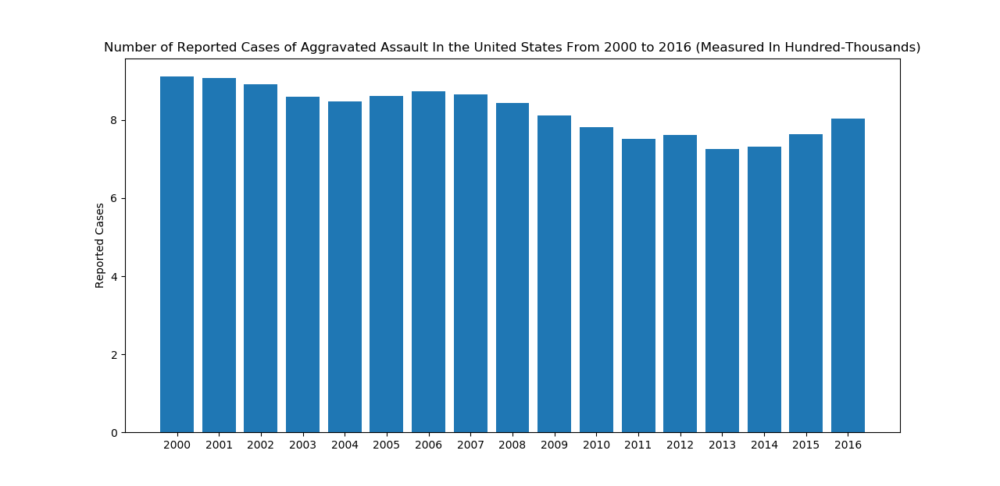
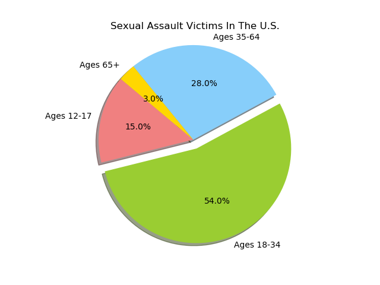
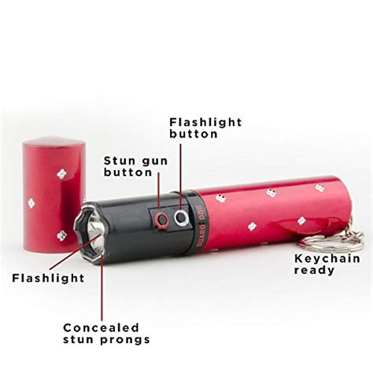
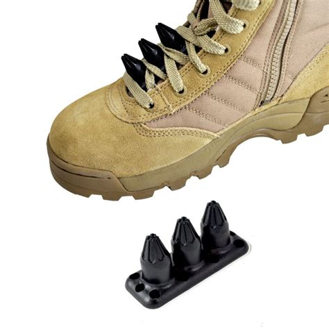
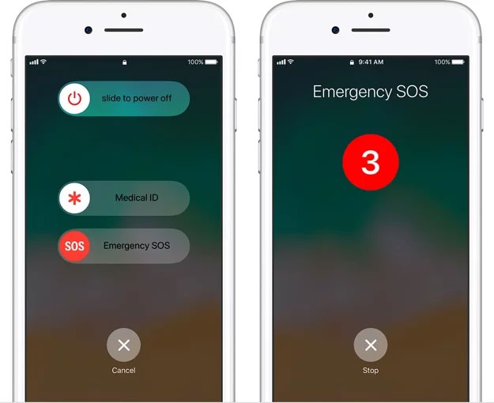

Physical Abuse Stats

This is a visual representation of how prevalent violence and abuse within relationships really is, no matter the gender. .
ESCAPE is much more than just a website of references; it's a community of people who are passionate about educating themselves as well as others on the art of self defense. The overall goal of ESCAPE is to ensure that even the most vulnerable of people understand that there are always self-sufficient means of resisting attacks by a suspected/unsuspected aggressor. We want people who once felt like they were weak and defenseless to realize that they are more powerful than they know, hence our slogan " Be Your Own Hero"
A more specified goal here at ESCAPE is also to raise awareness of the widespread physical/sexual assault and domestic violence faced by people today in our nation.
These statistics show how much of a problem this poses to our society as a whole, and it reminds us that we still have a lot of work to do to help tremendously reduce violence in America.
Physical Abuse Stats
This is a visual representation of how prevalent violence and abuse within relationships really is, no matter the gender. .
Aggrivated Assault Stats
These stats show that there have been approximately 14 million reported cases of aggravated assaults from 2000 to 2016. That's enough reported cases to fill about 300 Yankee Baseball Stadiums (If every reported case filled one seat)!
Sexual Assault Stats
These statistics reveal that younger people are at the highest risk of sexual assault. A majority of sex assault victims in the United States are under the age of 30.
Please understand that no move or tutorial shown to you by ESCAPE can always be effective 100% of the time. However, all resources supplied to you are known and shown to be potentially life-saving.
| This video clip displays a number of easy-to-learn techinques for women or anyone who is physically disadvantaged in a serious situtation. These may help you in your time of need. |
| This video should give you the basic information needed for you to escape a back choke hold, a common disabling move inflicted by an attacker. |
| Here at ESCAPE we understand he fact that self defense does not extend only to women but literally anyone that is disadvantaged in a seriously physical situation. Self-defense education should be a family activity. This video clip is great for younger children who may be getting bullied or might be at risk of it due to a physical disadvantage in the situation. |
| This video gives insight to 5 great self-defense moves that one may use in a physical situation or altercation in which they are disadvantaged. |
| These are some 30 Self Defense that you able to learn for any situtation and to protect yourself |
Here are some resources you may find helpful if you happen to be a victim of any of these forms of violence. These hotlines are open 24 hours a day, 7 days a week.
- New York State Domestic and Sexual Violence Hotline: 1-800-942-6906
*This hotline number offers multi-language accessibility*
=====- For Deaf or Hard Of Hearing: 711
- In NYC: 1-800-621-HOPE(9653) or dial 311 TDD: 1-800-810-7444
- And for other emergencies, call 911
=====If you are interested in getting more involved in learning the art of self defense, there are tons more resources that you can find within a close proximity. Below, you can find different programs and institutions that hold weekly self-defense classes right here in New York City.
Every tuesday and thursday there are self defense classes for free!
There are new classes added which are on now on sunday
Here are some convinent and subtle items that we feel can help keep you both aware and safe. Items and applications such as these come in handy in a big city or area where you are unable to just casually walk around with a protective item that may be perceived as a weapon.
|  | This tiny device packs loads of power with 3 million volts. There are 100 lumens of pure white light flashlight that can blind momentarily blind your suspected attacker. It has a built-in keychain and is conveniently rechargeable. |
|  | This device is the only non-fatal self-defense weapon made for shoes. Although it is very lightweight, it is very effective if you're ever in a vulnerable position where kicking your attacker is your best or only option. It fits into the laces of your shoe on the top of its tongue. |

|
This pepper spray can be sprayed 7-9 times per second. It sprays 46% hotter than any other pepper spray. It can reach a distance of 7-9 feet and can leave the attacker unconcious for about 45 mintues without permanent damage. It has 4 million Scoville heat units. |
|  |
Apple emergency button in the iphone
If you happen to own anything below the iphone 7, you’re in luck because in case of an emergency press the side of your button very rapidly 5 times. This method will call 911.
If have an iphone X, 8, or 8 plus press and hold the side button and the volume button until the Emergency SOS appears.
BOTH OF THESE WILL DO THE FOLLOWING….
Make sure to update your emergency contacts/medical ID because after the calls ends your iphone will send whoever the you insert emergency contacts a text message with your current location.
Your location will get updated every 10 min
If you have an Android phone however, there's no need to fret! Samsung developed a similar SOS feature for their Galaxy phones. When in an emercency situation, just three quick taps of your power button will allow your phone to immediately send pictures from your front and rear camera to a set of emergency contacts. |